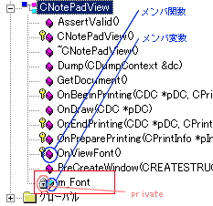
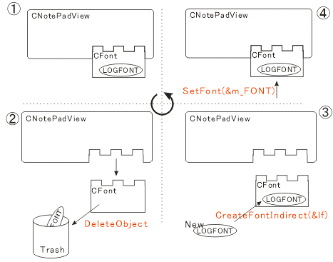
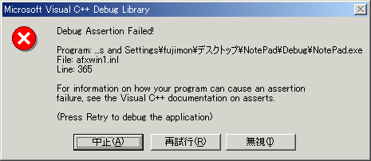
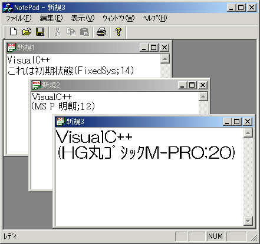

Windowsに付いてくるメモ帳も，フォントを変更することができます．私達もフォントが変更できるように頑張ってみましょう．まず，フォントの変更に関する仕様は以下の通りとします．
- ユーザがメニュー内の[フォントの変更]をクリック．
- フォント選択ダイアログが開く．
- フォントをユーザが指定する．
- 指定された通りにフォントに変更する．
このようにプログラムを書く前にある程度の仕様というかストーリー？を考えておくことは，プログラミングでは重要です．ではまずはじめに，「フォントの変更」メニューを追加してみましょう．といっても別に目新しいことではありません．先ほど削除メニューを追加したこととほとんど同じです・
- ワークスペースのリソースタブをクリックし，メニューフォルダのIDR_NOTEPATYPEをダブルクリック.
- メニューの「表示」をクリックし，メニュー内で項目が無いところをハイライト，右クリック，プロパティ．
- プロパティダイアログに以下の内容を記述．
キャプション フォントの変更(&F)
ID：ID_VIEW_FONT
プロンプト：使用するフォントを変更する\nフォントの変更 - ダイアログを閉じる．
こうするとメニューの「表示」に「フォントの変更」という項目が追加されます．先ほど「削除」メニューを追加した時と違うことはメニューのIDが適当でいいということです．つまりこのIDは自分で決めることが可能です．でもできるだけわかりやすいIDにしておくことも重要です．ここでIDとWindowsについて少しお話をしておきます．
Windowsはメッセージと呼ばれるものを使って動いています．例えばウィンドウの右上の×ボタン（システムボタン）が押されると，ウィンドウは消えることになっていますが，これは「ウィンドウ消去」というメッセージがOS(Windows)から送られてくるのをアプリケーションが取得し，既存の動作をさせているのです．このようにWindowsプログラミングはメッセージのやり取りだと思ってもいいかもしれません．
さっきからIDと呼ばれているものは，実はメッセージに相当します．つまり「フォントの変更」を押すとOSから，ID_VIEW_FONTというメッセージがやってくるので，それを捕まえてフォントの変更処理をすることで先ほど仕様として決めたことが実現できるのです．となるとメッセージを捕まえる機構が必要ですよね〜．それを実現するのがClassWizardです．
- メニュー「表示」-「ClassWizard」を開き，メッセージマップタブをクリック．
- 以下のように選択・ハイライトする(figure5)
プロジェクト：NotePad
クラス名：CNotePadView
オブジェクトID：ID_VIEW_FONT
メッセージ：COMMAND - 関数の追加ボタンを押し，関数名をOnViewFont（ディフォルト）に設定しOKを押す．
- 最後にコード編集ボタンを押す．
※ これを押さずに下のOKボタンの押してClassWizardを閉じた後，ワークスペースのクラスビューから，CNotePadViewを参照することも可能．
figure.5 ClassWizardによる設定

いったい何をしたのだろう？と思う人は，ID_VIEW_FONTが押された時にCNotePadView内の関数OnViewFontが実行されるようにマッピングしたと考えれば多少は分かるかも知れません．だからClassWizardのこの画面は，メッセージマップというのです．したがってフォントの変更のコーディングはOnViewFontに書けばよいということになります．ちなみにフォントの変更は外観の変更に過ぎません．したがって関数は外観を扱うViewに追加するのがベストです．
◇
いま，NotePadView.cppが開かれていると思います（そうでなかったら開いておいてくださいね）．多分以下のように書かれているので，
/////////////////////////////////////////////////////////////////////////////
// CNotePadView クラスのメッセージ ハンドラ
void CNotePadView::OnViewFont()
{
// TODO: この位置にコマンド ハンドラ用のコードを追加してください
}
これを以下のように変更してみましょう．
void CNotePadView::OnViewFont()
{
AfxMessageBox("VisualC++"); // Open Message Box
}
では実行してみましょう．フォントの変更をクリックすると，VisualC++と書かれた小さなウィンドウ（メッセージボックス）が表示されたら成功です．これでメニューと関数がしっかり対応付けされているということがわかりますね．AfxMessageBox関数は，MFCを使用している場合ならどこでも使用することが可能なので，C言語のprintf関数のようにデバックにも有効だと思います．
◇
それではフォントの変更プログラムを書いていきましょう．まずビュークラス(CNotePadView)にフォントを扱う変数を追加しておきます．このような変数を，C++ではメンバ変数と呼びます．ちなみに先ほど追加したOnViewFontはメンバ関数になります．
- ワークスペースのクラスタブをクリックし，CNotePadViewを右クリックし，メンバ変数の追加をクリック
※ ダイアログが開かれます． - ダイアログに以下の値を設定してOKを押す．
変数のタイプ：CFont
変数名：m_Font
アクセス制御：private
追加したものは，フォントを操作するためにMFCで用意されているCFontクラスの変数です．うまく追加できると，クラスビューがこんな感じに表示されます．
figure.6 メンバ変数の追加

実際には，NotePad.hファイルにこのように宣言されます．逆にいえばメンバの追加は，直接コーディングで行うことができるということですね．
// 生成されたメッセージ マップ関数
protected:
//{{AFX_MSG(CNotePadView)
afx_msg void OnViewFont();
//}}AFX_MSG
DECLARE_MESSAGE_MAP()
private:
CFont m_Font;
};
ちなみに上のコードを見てみると，OnViewFontの定義もされていますね．これはClassWizardのメッセージマップで作られために，//{{AFX_MSG(CNotePadView) なんていうやつで囲まれていますが，メンバ関数のひとつです．先ほどから気になっている人がいるかもしれませんが，アクセス制御(privateとかpublicとか)とはなんでしょう？それは実はオブジェクト指向に秘密があります．
アクセス制御
オブジェクト指向では，オブジェクトの「状態」と「状態を変化させる手段」を持つことになっています．例えば，人間というオブジェクトの状態の１つに「体重」があります．そして体重を変化させる手段として「食事」「ダイエット」などがあります．ここで重要なことは，一般的に「状態」は「状態を変化させる手段」以外では変化させることができないのです．だから「運動しない」という手段では当然「体重」は減りません．こうすることで，ある種の情報を外部から見えなくすることができます．これを情報隠蔽といい，オブジェクト指向の重要概念の１つです．しかし，これをプログラムで実現しようとする時，すべて外部から見えなくなるのも不便です．そこで３種類のアクセス制御を書けることができます．
private クラス内部からしかみることができない．
protected クラス内部からしか見ることができないが例外もある（説明は省略）
public クラス外部からも参照することができる．
C++では，この「状態」に当たるものをメンバ変数，「手段」に当たるものをメンバ関数と呼びます．大抵のメンバ関数はpublicにされます．そうしないとクラス外部からはまったくアクセスができなくなってしまうからです．
◇
では，フォント変更に関する準備が整いましたのでコーディングしていきましょう．
void CNotePadView::OnViewFont()
{
LOGFONT lf; // LOGFONT構造体の宣言
m_Font.GetLogFont(&lf); // 現在のフォント情報を取得
// コモンフォントダイアログの作成
CFontDialog dlg(&lf, CF_SCREENFONTS|CF_INITTOLOGFONTSTRUCT);
// ダイアログを開く
if (dlg.DoModal() == IDOK)
{
m_Font.DeleteObject();
if(m_Font.CreateFontIndirect(&lf))
SetFont(&m_Font);
}
}
はじめてC++のコーディングをする人は，へんなコーディングだなぁと思うかもしれません．クラスの変数の後ろに，"."を付けて記述していますね．この"."をつけることで，そのクラス変数のメンバ関数を呼び出すことができるのです．つまり人間というクラスがあるとして，メンバ関数に自己紹介というものがあったら，以下のようにすれば自己紹介してくれます．
人間 日本太郎； 日本太郎.自己紹介();
では，コーディングの説明をしていきます．
LOGFONT lf;
フォントの情報を格納するLOGFONT構造体変数lfの定義です。LOGFONT型は、フォントの大きさ・種類・高さ・角度・幅・色などの情報を格納できる変数です。 CFontクラス変数は，あくまでフォントを操作するための変数なので，フォントを扱う時には，CFont変数にLOGFONT構造体変数をセットして使います．
m_Font.GetLogFont(&lf);
現在表示に使用されているフォントの情報を，CFont型変数m_Fontを使ってLOGFONT変数lfに書込みます．
CFontDialog dlg(&lf,
CF_SCREENFONTS|CF_INITTOLOGFONTSTRUCT);
フォントを設定するコモンダイアログ(共通ダイアログ)を開きます．このとき設定した内容はLOGFONT構造体lfに格納されるように引数を指定しておきます．
if (dlg.DoModal( ) == IDOK) {
フォントコモンダイアログを開き，OKボタンが押された時のみif構造の中を実行します．
m_Font.DeleteObject( );
現在設定されているフォントを削除します．この変数が消えてしまうわけではなく，メモリーに残された現在のフォント情報を消すということです．
if(m_Font.CreateFontIndirect(&lf))
LOGFONT構造体を使って，新しいフォントを作成します．成功したらif構造の中を実行します．
SetFont(&m_Font);
先ほど作成したフォントm_Fontを現在のフォントとしてビューにセットし，プログラムで使用するフォントとして反映します．
どんなことをしているか分からない場合は，以下の図を見てもらえれば多少分かると思います．
figure.7 フォントの変更の仕組み

◇
早速実行してみましょう．うまくフォントが変更できたでしょうか？残念ながら「フォントの変更」を押すと，
figure.8 エラー発生

というエラーが出てきてプログラムは強制終了になってしまいます．これはASSERTといってソースファイルのシンタックス（文法）には問題はないが，おかしな動作をしている時に出るエラーです．もちろん自分でASSERTで強制終了させるプログラムを書くこともできますが．
まぁ結果的にはプログラムが間違っているわけなので修正が必要なのですが，今回は特別に？どこが間違っているかを説明してしまいましょう（実際は自分がなんとかして調べるのです）
ソース２行目のm_Font.GetLogFont(&lf);で現在のCFontクラスからフォント情報を得るということになっていますが，現在のCFontクラスとは何のことでしょうか？そもそもm_Fontはこちらが決めた変数ですから，Viewクラスと何も関係を持っていないのでフォント情報を持っていないのです．したがってフォントの変更が行われる前に，m_Fontにフォント情報を当てておかなくてはいけません．さて問題はいつそれをやるかです．
あれこれ悩むところですが，MFCのフレームワークは，タイミングや用途に合わせて既存の関数が実行させることができます（正しく言うと勝手に実行される）．テキストが開かれて表示される直前に実行される関数として，OnInitialUpdate() というビューのメンバ関数を使ってフォント情報を与えるコーディングを書いていきます．まずはOnInitialUpdate関数が呼ばれるための手続きをしてあげます．基本的にアプリケーションが自動的に呼び出す関数を設定する時はClassWizardを使います．
- クラスウィザードを起動し，メッセージマップタブをクリックする．
- 以下のように選択・ハイライトする
プロジェクト：NotePad
クラス名：CNotePadView
オブジェクトID：CNotePadView
メッセージ：OnInitialUpdate - 関数の追加ボタンを押し，編集ボタンを押す．(関数名の指定はなし)
するとNotePadView.cppにOnInitialUpdate()という関数が追加されます．ここで以下のようにコーディングしてみましょう．
void CNotePadView::OnInitialUpdate()
{
CEditView::OnInitialUpdate();
LOGFONT lf;
// 表示フォントの初期設定
lf.lfHeight = 18;
lf.lfWidth = 8;
lf.lfEscapement = 0;
lf.lfOrientation = 0;
lf.lfWeight = 400;
lf.lfItalic = false;
lf.lfUnderline = false;
lf.lfStrikeOut = false;
lf.lfCharSet = SHIFTJIS_CHARSET;
lf.lfOutPrecision = OUT_DEFAULT_PRECIS;
lf.lfClipPrecision = OUT_DEFAULT_PRECIS;
lf.lfQuality = OUT_DEFAULT_PRECIS;
lf.lfPitchAndFamily = OUT_DEFAULT_PRECIS;
strcpy( lf.lfFaceName, "FixedSys" );
ASSERT(m_Font.CreateFontIndirect(&lf));
SetFont(&m_Font);
}
ではまた解説していきます．
CEditView::OnInitialUpdate();
関数を作った時にかかれていたものです．ここではくわしく説明しません．「触らぬものにたたりなし」です．
LOGFONT lf;
LOGFONT構造体変数のlfです．OnViewFont関数のlfでなくて、この関数内だけのlfだということに注意してください．
lf.〜
これはフォントの設定をしています．LOGFONT構造体について調べればある程度分かると思いますが，こういうものだと認識してもかまいません．初期フォントとして，VisualC++のソースで使用されるフォントを採用しています．
ASSERT(m_Font.CreateFontIndirect(&lf));
m_Font.CreateFontIndirect(&lf)で上で指定したフォント情報をm_Fontに取り込みます．この関数が失敗するとフォントの設定がうまくいかなくなり，アプリケーションとして成り立たないので，この関数が失敗したらASSERTされるようにしておきます．つまり強制終了です．成功したらASSERTはされません．
SetFont(&m_Font);
フォントの設定に成功しているのであとはビューとフォントを関連付けするだけです．
最後に実行してみましょう．フォントの変更が正しくできますか？テキストごとに異なるフォントが設定できましたか？いろいろチェックしてみてください(figure.9)．
figure.9 フォントの変更に成功
